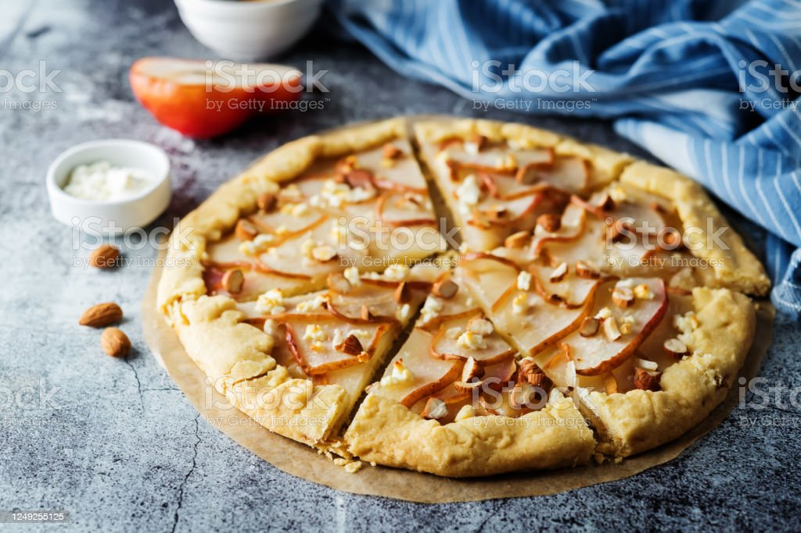
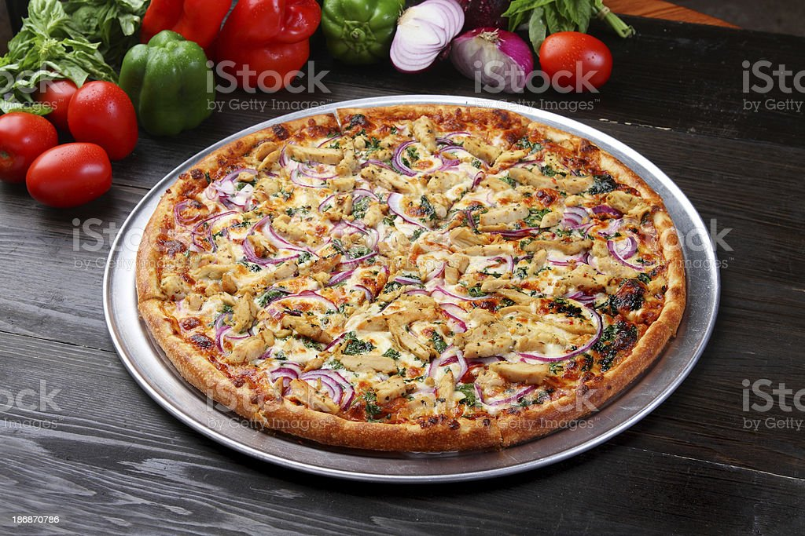
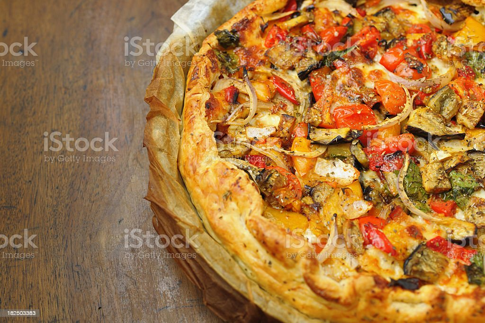
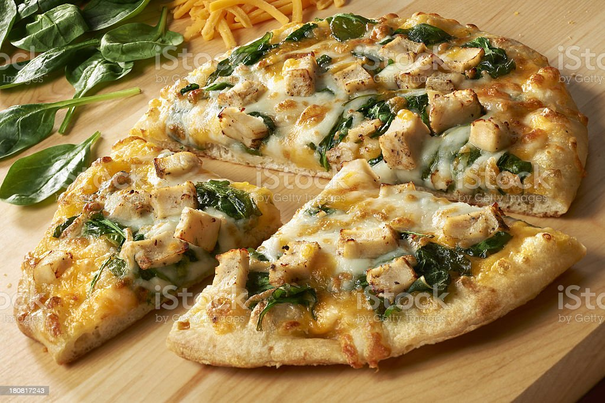

Mantarlı Pizza
Açıklama:
Dilimlediğiniz mantarları ve varsa mısır taneleri eklenir. Tuz, karabiber serpilip fırında on beş dakika pişirilir. Soğanlı mantarlı pizza çıtır pizza olsun diye son aşamada ince doğranmış fesleğen ve rende kaşar peyniri serpilip tekrar fırına verilir. Peynirler eriyip bir miktar pembeleşince fırından alınır.
Fiyat: 50 TL
Tavuklu Pizza
Açıklama:
Pizza sosu, mozzarella peyniri ile mükemmel bir çift olur. Bu eşsiz çiftin yanına eklenen tavuk, köz biber ve mısır ürünleri de gösteriyi tamamlayan en güzel parçalarıdır.
Fiyat:50 TL
Meksika Pizza
Açıklama:
Uzun zamandır hayranların favorisi Meksika pizzası milyonlarca fast-food fanatiği için arabaya servis siparişidir. 1985'ten beri menünün vazgeçilmezi olan bu ürünü bırakacakları haberi geldiğinde, her yerdeki insanlar öfkelerini ifade etmek için sosyal medyaya başvurdu.
Fiyat:50 TL
Ispanaklı Pizza
Açıklama:
Fırından çıkan pizzayı, kırmızı biberli zeytinyağı ve taze çekilmiş tane karabiber ilavesiyle servis edebilir.
Fiyat:50 Tl